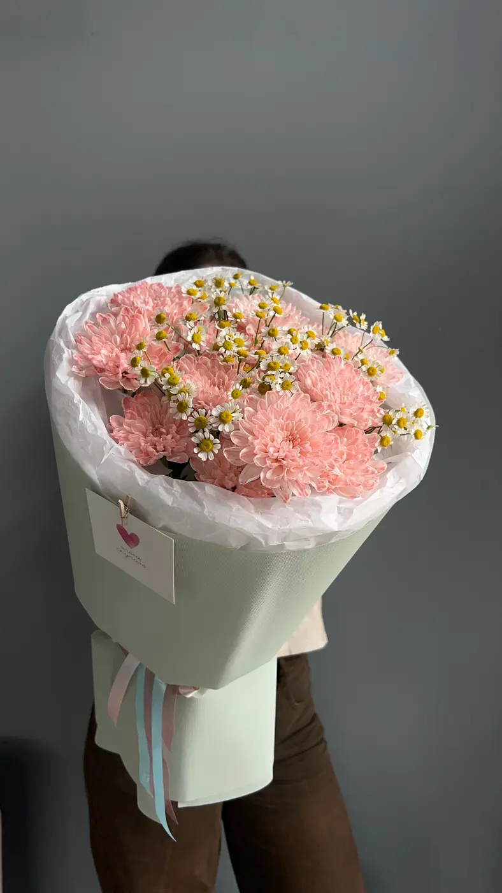
Сама нежность
3 500 ₽
Цветочная душа · Новосибирск
Студия цветов и авторских букетов
Для признаний, встреч и маленьких «просто так».
Заказать букет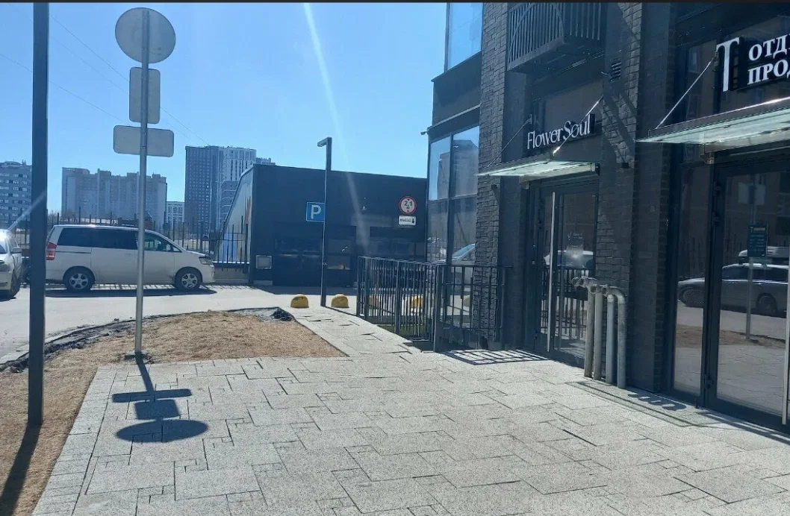
Выберите настроение. Наличие цветов, состав и итоговую стоимость подтвердит флорист.

3 500 ₽
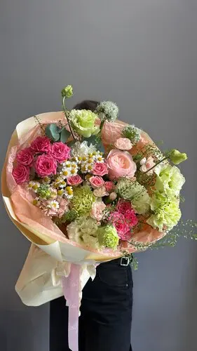
3 800 ₽
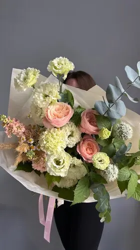
5 800 ₽
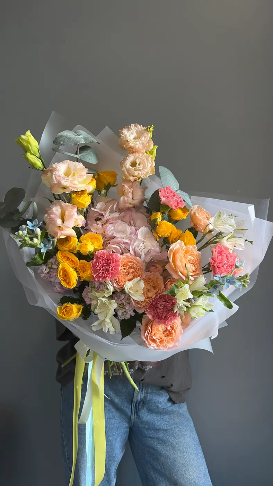
7 800 ₽
Цены из карточки Яндекс Карт на 7 ноября 2026 года. Наличие и стоимость доставки уточняйте перед оплатой.
Посмотрите каталог или расскажите флористу, кому и по какому поводу дарите цветы.
Уточните состав, наличие, бюджет и удобное время получения в Telegram.
Приходите на Военную, 51. Доставку согласуйте с флористом при заказе.
Цветы, детали и наша студия. Настоящие фотографии из карточки Flower Soul на Яндекс Картах.
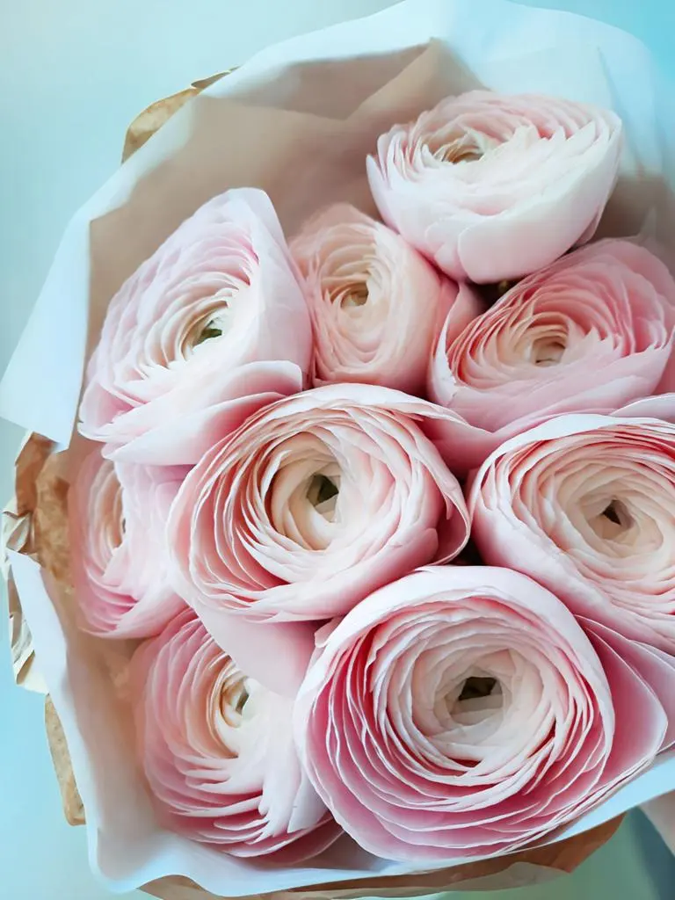
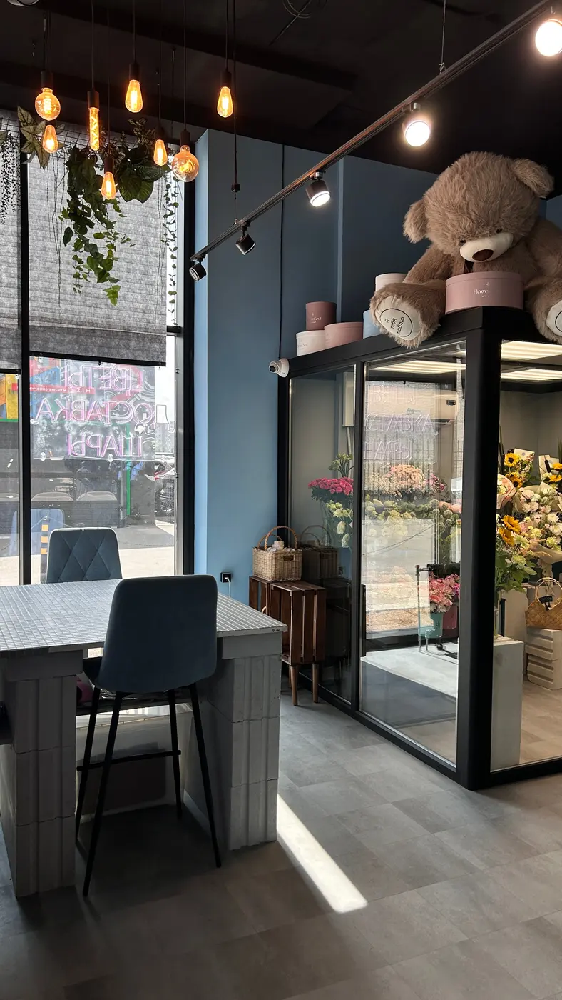
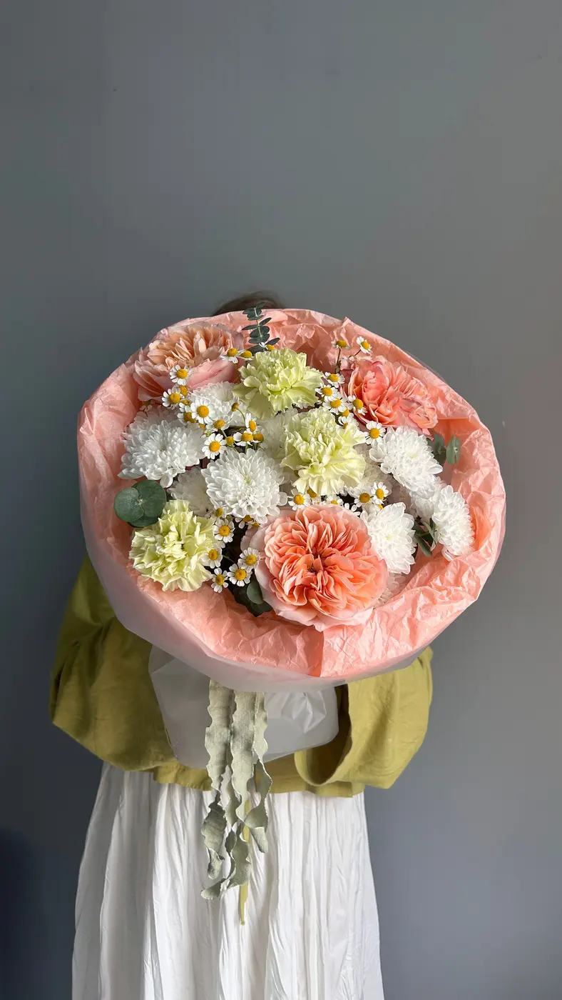
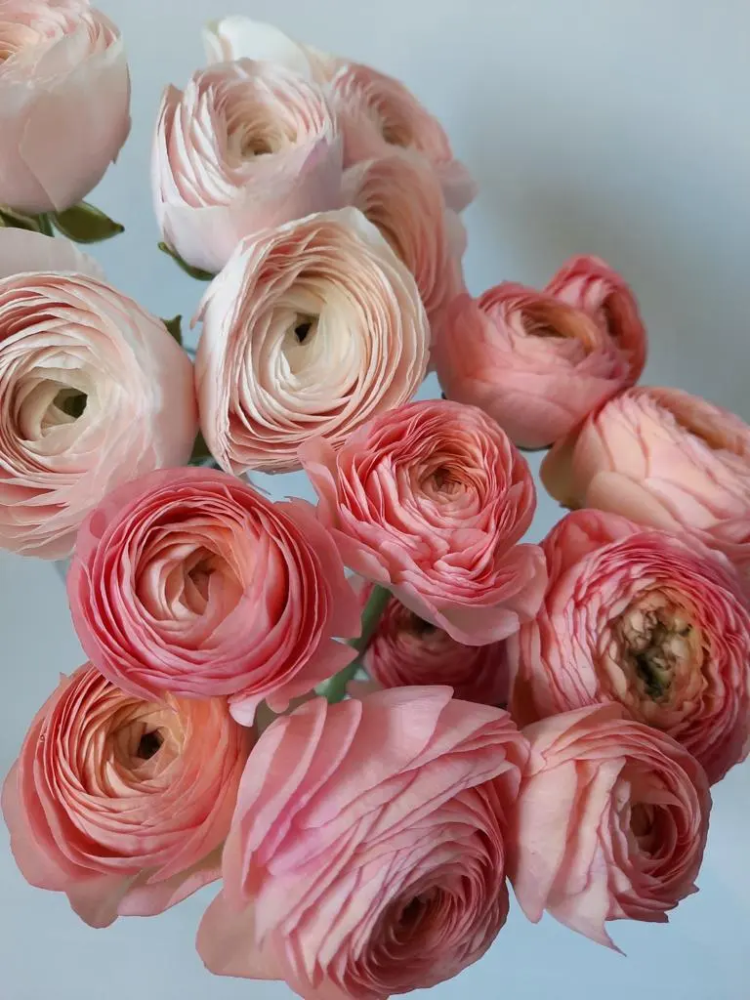
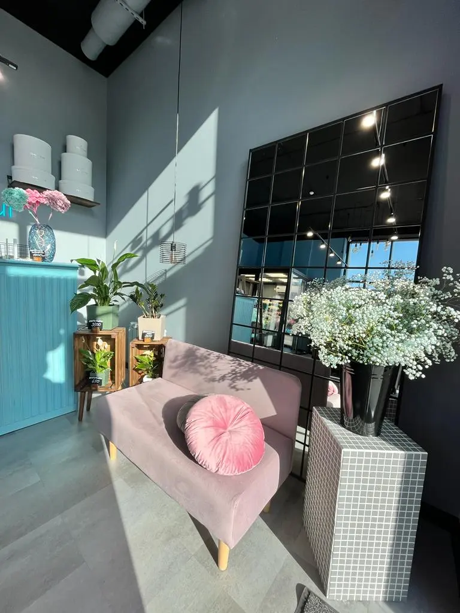
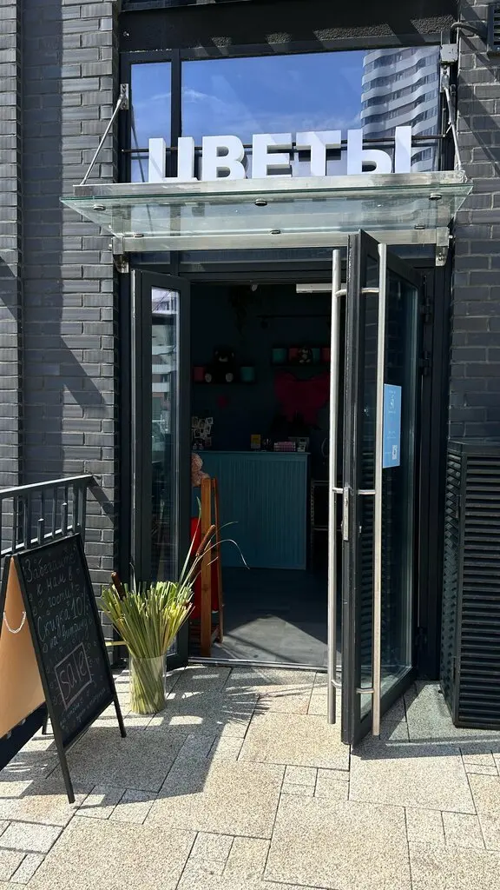
Посмотрите цветы и обсудите букет с флористом лично. Мы на первом этаже, на Военной, 51.
В карточке студии доступны Telegram, телефон и доставка цветов.
«Безупречный сервис, оперативная доставка и самые красивые цветочные композиции. Таких красивых и гармоничных букетов в нашем городе я еще не видела. Цены демократичные и очень приятные! Лучшие! »
Мария Д. · 02.09.2026
«Была в вашем салоне — и снова в восторге! Живу и работаю неподалёку, поэтому захожу часто, и ни разу не разочаровалась. Цветы всегда невероятно красивые и по-настоящему свежие. Особенно ценю ваш авторский подход — каждый букет будто с историей. Персонал очень приятный, всегда встречают с улыбкой и помогают с выбором. Уже не первый раз заказываю композиции к праздникам — всё на высшем уровне. Спасибо за красоту и хорошее настроение!»
Анастасия К. · 29.09.2026
«Чудесный цветочный салон, часто беру цветы отсюда домой, Екатерина безумно приятный человек и талантливый флорист, очень понравилось разнообразие, качество цветов и сама стилистика, собирают очень стильные букеты, самое то чтобы поставить в вазу😍 Большое спасибо за Ваш труд🥰»
Ангелина ૮ ˶ᵔ ᵕ ᵔ˶ ა · 23.08.2026
Отзывы с карточки на Яндекс.Картах, без правок.
Выберите букет в форме на сайте и нажмите «Отправить заказ в Telegram». Откроется чат студии; текст можно скопировать и вставить в сообщение.
Да, самовывоз доступен по адресу: Новосибирск, ул. Военная, 51, этаж 1. Часы работы: ежедневно с 10:00 до 20:00.
Стоимость и время доставки уточняйте у флориста. В форме показана стоимость выбранного букета без доставки.
Фотографии показывают работы и ассортимент студии. Наличие цветов и точный состав выбранного букета подтвердит флорист.